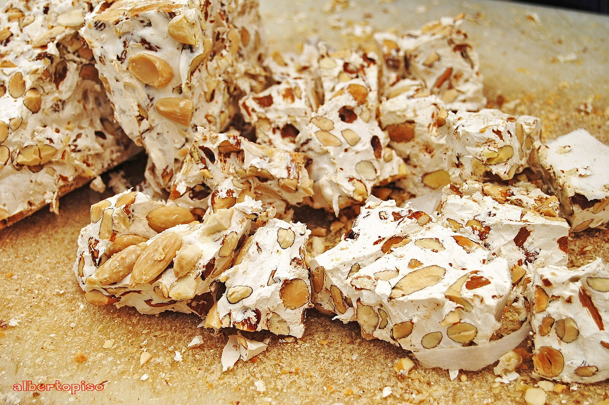

Torrone Recipe

Description
Italian torrone is very easy to make at home,
but it does take a while —
mostly standing at the stove and stirring.
But it's worth it for the gorgeous nut-studded,
amazingly textured nougat candy you get.
A fantastic treat for holiday gifting!
Yields 40 servings
Ingredients
- 2 (8x10-inch) sheets wafer paper (edible rice paper)
- 3 cups roasted almonds
- 1 cup roasted pistachios
- 1 ⅓ cups light amber honey
- 1 cup white sugar
- 3 tablespoons white sugar
- 2 large egg whites, at room temperature
- 1 pinch salt
- 1 tablespoon lemon zest
- ¼ teaspoon vanilla extract
Steps
- Line an 8x11-inch baking dish with plastic wrap, allowing ends to hang over the sides. Place 1 sheet wafer paper in the bottom of the lined dish. Place almonds and pistachios in a warm place to make them easier to mix in at the end.
- Pour honey into a heavy-bottomed pot. Add 1 cup plus 3 tablespoons sugar; cook over low heat with a spatula, stirring constantly, until mixture turns from grainy to silky and smooth, about 30 minutes. Remove the pot from heat.
- Place egg whites and salt in a mixing bowl. Whisk until whites form soft peaks, 3 to 4 minutes. Place the pot with honey mixture back on low heat. Gradually whisk 1/4 of the whipped egg whites into honey mixture; whisk in remaining egg whites in 3 more batches.
- Continue cooking over low heat, stirring constantly with a spatula, until mixture turns a brighter white and a ribbon of mixture sits on the surface for 4 or 5 seconds before it disappears, about 40 minutes. You can add a few drops of mixture to a small bowl of ice cold water to test the consistency; ideally it should feel like firm clay.
- Whisk in lemon zest and vanilla. Add warm almonds and pistachios; stir to incorporate evenly. Transfer nougat mixture to the prepared baking dish; smooth the top with a clean, oiled spatula. Top nougat with remaining sheet wafer paper, shiny-side up. Lay plastic wrap over the top and press down evenly, tamping mixture down gently but firmly. Remove top plastic wrap.
- Allow nougat to sit at room temperature until cool, firm, and ready to cut, 1 or 2 hours.
- Lift the edges of overhanging plastic wrap to release nougat from the baking dish. Invert and remove plastic wrap from the bottom. Trim off the edges if plastic wrap is hard to remove. Cut torrone into 1-inch squares using a sharp serrated knife.
Home